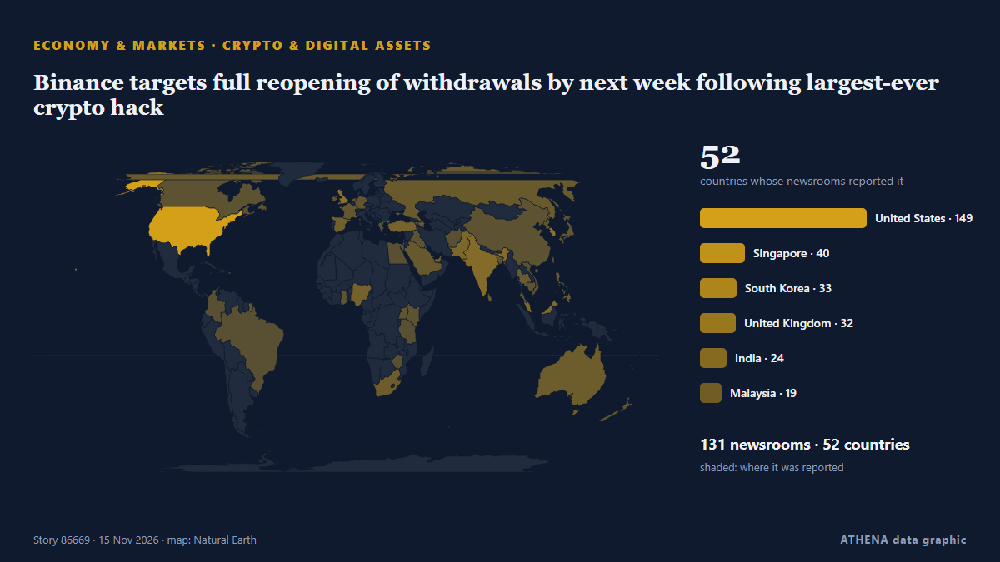

Economics, Finance & Markets
SponsoredPresented by  Cybernetics and Artificial Intelligence Lab Welcome to the Cybernetics and Artificial Intelligence Laboratory, established at the Department of Business Administration of the National and Kapodistrian University of Athens. The lab is headed by Professor Dimitrios Thomakos. The lab aims to do research that can be published in top venues. Our research uses tools and methods of Artificial Intelligence, and lies in the following areas: - Forecasting - Decision making - Cyber security - Finance We are always looking forward to collaborating with exceptional students!
Cybernetics and Artificial Intelligence Lab Welcome to the Cybernetics and Artificial Intelligence Laboratory, established at the Department of Business Administration of the National and Kapodistrian University of Athens. The lab is headed by Professor Dimitrios Thomakos. The lab aims to do research that can be published in top venues. Our research uses tools and methods of Artificial Intelligence, and lies in the following areas: - Forecasting - Decision making - Cyber security - Finance We are always looking forward to collaborating with exceptional students!
Market monitor - official figures
Which way official market measures are moving - up, down or flat - with the latest official figure and its date, and the market news ATHENA verified alongside. Official figures, not live prices.
Energy
| 1 day | 1 week | 1 month | Official figure | |
|---|---|---|---|---|
| Brent crude | ▲ | ▲ | ▼ | $92.14/bblOfficial data of 11 Nov 2026 |
| WTI crude | ▬ | ▼ | ▼ | $89.62/bblOfficial data of 11 Nov 2026 |
| US natural gas (Henry Hub) | ▬ | ▲ | ▼ | $3.00/MMBtuOfficial data of 11 Nov 2026 |
| European natural gas (1 month · 3 months · 12 months)(1M · 3M · 12M) | ▲ | ▲ | ▲ | $25.49/MMBtuOfficial data of 1 Sep 2026 |
| Coal (Australia) (1 month · 3 months · 12 months)(1M · 3M · 12M) | ▲ | ▲ | ▲ | $153.84/tOfficial data of 1 Sep 2026 |
Food
| 1 month | 3 months | 12 months | Official figure | |
|---|---|---|---|---|
| Wheat | ▲ | ▲ | ▲ | $246.85/tOfficial data of 1 Sep 2026 |
US stock markets
| 1 day | 1 week | 1 month | Official figure | |
|---|---|---|---|---|
| S&P 500 | ▼ | ▲ | ▼ | Direction only (index © Cboe)Official data of 13 Nov 2026 |
| Nasdaq Composite | ▼ | ▲ | ▼ | Direction only (index © Cboe)Official data of 13 Nov 2026 |
Rates, risk and the dollar
| 1 day | 1 week | 1 month | Official figure | |
|---|---|---|---|---|
| US 10-year Treasury yield | ▲ | ▲ | ▼ | 5.10 %Official data of 12 Nov 2026 |
| Market volatility (VIX) | ▲ | ▼ | ▲ | Direction only (index © Cboe)Official data of 12 Nov 2026 |
| US dollar, broad index | ▲ | ▲ | ▲ | 121.88Official data of 6 Nov 2026 |
The euro against other currencies
| 1 day | 1 week | 1 month | Official figure | |
|---|---|---|---|---|
| EUR/USD | ▼ | ▼ | ▼ | 1.1052 USDOfficial data of 13 Nov 2026 |
| EUR/GBP | ▬ | ▲ | ▼ | 0.8356 GBPOfficial data of 13 Nov 2026 |
| EUR/CHF | ▲ | ▲ | ▼ | 0.9266 CHFOfficial data of 13 Nov 2026 |
| EUR/JPY | ▬ | ▬ | ▼ | 176.83 JPYOfficial data of 13 Nov 2026 |
| EUR/CNY | ▼ | ▼ | ▼ | 7.3738 CNYOfficial data of 13 Nov 2026 |
| EUR/TRY | ▬ | ▼ | ▲ | 55.667 TRYOfficial data of 13 Nov 2026 |
| EUR/NOK | ▬ | ▲ | ▼ | 10.5695 NOKOfficial data of 13 Nov 2026 |
Sources: US Energy Information Administration (oil, US gas), IMF (European gas, coal, wheat), US Treasury and Federal Reserve (10-year yield, dollar index) Cboe (VIX), S&P Dow Jones Indices (S&P 500) and Nasdaq (Nasdaq Composite), via FRED (Federal Reserve Bank of St. Louis); euro reference rates © European Central Bank. Figures are the latest official values with their date - not live prices. Directions are computed by ATHENA.
Crypto, ETFs and shares in the news
- Binance targets full reopening of withdrawals by next week following largest-ever crypto hack Risk 3.5 15 Nov
- AI retreat fuels India's stock market comeback in great rotation trade Risk 1.2 15 Nov
- PM vows to work ‘in lockstep’ to revive Welsh Labour as party ‘must take stock’ Risk 0.0 14 Nov
- Cryptocurrencies Price Prediction: Bitcoin, Ripple & Crypto – European Wrap 13 November Risk 1.5 14 Nov
- Trump bought Nvidia shares, then cleared path for chip sales to China: Report Risk 0.8 14 Nov
- Nvidia stock suffers longest weekly losing streak since 2012 as market value sinks by $1.7 trillion Risk 0.8 14 Nov
- 'NCP merger talks a laughing stock, damaging Sharad Pawar's image' Risk 0.0 14 Nov
- Turkish investors show interest in buying 49% shares in Akkuyu project — Rosatom Risk 0.0 14 Nov
- ‘No room for 7-hour sleep cycle’: Jaishankar shares glimpse into his diplomatic grind Risk 0.0 14 Nov
- India's Paytm gets preliminary RBI nod for wallet licence; shares hit record high Risk 0.0 14 Nov

Crypto & digital assetsBinance targets full reopening of withdrawals by next week following largest-ever crypto hack
An on-chain tally puts the suspected Binance drain at $5.57 billion across three blockchains, as Tether and Circle froze $1.8 billion. from Decrypt
| 2 Nov | 136 |
|---|---|
| 3 Nov | 124 |
| 4 Nov | 114 |
| 5 Nov | 118 |
| 6 Nov | 95 |
| 7 Nov | 42 |
| 8 Nov | 65 |
| 9 Nov | 155 |
| 10 Nov | 129 |
| 11 Nov | 129 |
| 12 Nov | 110 |
| 13 Nov | 65 |
| 14 Nov | 27 |
| 15 Nov | 10 |
Germany postpones sugar tax and scraps electricity tax cut ahead of budget talks
Germany's proposed plastic tax has also been killed, along with some proposed social benefit cuts, as federal leaders agree to compromises in the 2027 budget. from The Local Germany
Oklahoma AD questions Ole Miss effort; decision to play Sunday 'inexplicable'
Oklahoma AD Roger Denny was critical of the SEC's decision to move the Sooners' home game against Ole Miss to Sunday following Friday's nationwide ground stop. from ESPN
Sudan: Does Your Culture Shape How You Look At Art? What an Eye-Tracking Study in Sudan Revealed
[The Conversation Africa] Today, Old Dongola is an abandoned settlement on the banks of the Nile in northern Sudan. from AllAfrica
Cryptocurrencies Price Prediction: Bitcoin, Ripple & Crypto – European Wrap 13 November
Bitcoin (BTC) is struggling to find support, slipping below $70,000 as multiple headwinds threaten to push the Crypto King lower. from FXStreet
Dubai Police bust gang who recruited people to open bank accounts for investment fraud
Dubai Police have arrested members of a gang accused of investment fraud. from Khaleej Times (working feed)
Israel advances plans for 895 new settlement homes across West Bank: Palestinian commission
LONDON: Israeli authorities have advanced 11 settlement expansion plans that would add 895 housing units across the occupied West Bank, alongside industrial and commercial developments, the… from Arab News
Nvidia stock suffers longest weekly losing streak since 2012 as market value sinks by $1.7 trillion
Jensen Huang's resignation added to Nvidia's market woes, with the stock already in a downward slide since early October. from CNBC World
PM Mitsotakis Pledges Double the Eurozone’s Growth in WSJ Interview
Mitsotakis said Greece lost 25% of its GDP during a decade of austerity. from to vima
Zamfara stands still as Gov Lawal hosts First Lady, Remi Tinubu for mega rally
Mrs Tinubu described her visit as a powerful expression of solidarity and compassion, as well as a commitment to women’s welfare and advancement. from Premium Times
Israeli army arrests 10 Palestinians in raids across occupied West Bank
Israeli forces arrest 10 Palestinians, including woman, during raids in Nablus, local sources tell Anadolu. from Anadolu Agency (English)
More Australians failing to make mortgage payments as interest rate rises bite
Data from the Commonwealth Bank of Australia attributed the small increase in the number of people struggling to inflation and rising interest rates. from Sydney Morning Herald
UN welcomes Kofi Annan’s appearance on new GH¢100 Heritage Banknote
By Nana Karikari, Senior Global Affairs Correspondent The United Nations has commended Ghana’s decision to place former UN Secretary-General Kofi Annan on the country’s newly unveiled GH¢100 banknote. from GBC Ghana Online
Gold and silver prices rise on commodity markets
Gold and silver prices have risen on the COMEX commodity exchange in New York. from AzerNews
Greece Short-Term Rental Revenue Rises 8.7% in 2026
Short-term rental revenue in Greece has increased by 8.7% in 2026, driven by higher nightly rates, while occupancy remains broadly stable and direct bookings gain market share. from Greek City Times
S&P500, Nasdaq end lower as Nvidia uncertainty weighs on tech shares
Nvidia's shares fell 2% and recorded their sixth straight week of declines, their longest streak since October 2012, after CEO Jensen Huang's resignation on Thursday. from Free Malaysia Today
US Treasury bought yen in July, its first intervention since 1998, as yen nears 160 again
The report confirms that the US is a willing partner in yen support, not just a bystander. from investingLive (ForexLive)
Europe’s Housing Affordability Gap Widens, With Greece Among the Hardest Hit
Europe’s housing affordability gap widened over the past decade, with Greece among the countries where home prices pulled further ahead of incomes, according to new European Union figures. from Greek Reporter
Paraguay widens ueno bank probe with fresh charge against ex-president Peña
ASUNCION, Nov 13 - Paraguay prosecutors on Friday added criminal association to the charges facing impeached President Santiago Peña, expanding a probe into the political links surrounding the… from The Straits Times
US aircraft evacuated from second UK base due to Iran threat, WSJ reports
US military aircraft were evacuated from a second UK base due to threats from Iran. from Arab News
Greek tax return declarations 2025: Incomes rose by €9.85billionn, two thirds of self-employed workers earning under €10,000
Tax authority figures reveal rising incomes and higher tax bills, with average declared household income reaching €16,808. from ProtoThema English
Stocks sway as Wall Street heads for winning week after several turbulent days
U.S. stocks are climbing Monday after oil prices eased back. from The Korea Times
US Treasury Secretary Bessent says 'F the Iranian leaders,' confirms move to military base
"I'm not going to be cowered by the death threats they have made against me. from The Jerusalem Post
Bitcoin slides below $70 000 as inflation concerns hurt crypto
Fell as much as 4.4% to $68 297, its lowest level since August 19. from Moneyweb
Treasury Secretary Scott Bessent moves into military housing due to Iranian threats
Treasury Secretary Scott Bessent has moved out of his home in Washington, D.C., and onto a military base out of concern for his safety, including Iranian threats to his life, officials said. from CBS News (World)
Nscale updates IPO prospectus that shows widening loss
Nvidia-backed neocloud Nscale on Thursday released updated paperwork for a U.S. initial public offering showing a widening loss. from CNBC World
French 2027 presidential election poll shows Melanchon gaining ground, Lagarde edging Philippe
A new opinion poll has shed light on the political landscape ahead of France’s 2027 presidential election, showing left-wing leader Jean-Luc Mélenchon securing more than 20% voter support, while… from AzerNews
Brazil October Inflation Slows to 0.14%
Brazil's IPCA inflation slowed to 0.14% in October, below forecasts, as power and air fares fell. from The Rio Times
Saqib takes seven on debut but Pakistan and Sri Lanka draw first Test
Saqib Khan enjoyed a dream debut with seven wickets, but it was not enough to force a result as the first Test between Pakistan and Sri Lanka petered out into a dull draw in Rawalpindi on Friday. from Business Recorder
Japan services activity expands for fifth month: PMI
New orders increased for a 28th straight month. from The Business Times
Japan: Trade and inflation data back December BoJ hike – DBS
DBS Group Research forecasts Japan’s real GDP to grow 0.8% in Q3, supported by AI-driven exports and stronger wage-led consumption. from FXStreet
Wheelock Place renamed Landmark Orchard after Hongkong Land acquisition
The Orchard Road property has been known as Wheelock Place since 1996. from CNA (Channel NewsAsia)
Britain eyes welfare cuts to tackle surge in youth unemployment
The Labour government will receive proposals next week to restrict youth sickness and disability benefits to fund back-to-work programmes for nearly one million young people. from Free Malaysia Today
Shop around to save €300 on motor insurance - research
New research from the Central Bank suggests consumers can save around €300 by shopping around for motor insurance. from RTÉ News